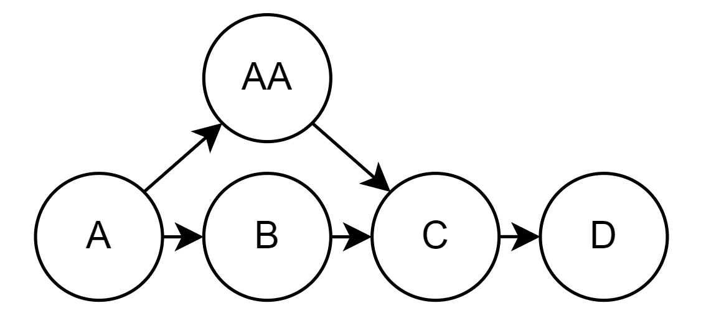

Section 1 - Music Web Theory
Chapter 1 - Introduction to Music Webs
- Node - an audio clip connected to others through a rigid set of rules
- Music Web - a cluster of 4 or greater nodes all connected to each other, with no unconnected nodes.
- Author’s Route - The initial or favorite route through the web by the creator(s) of the web. For infinite webs, you can use a subsection or a full loop.
Welcome to the world of Music Webs. This textbook will be introducing musical, theoretical, and technical components to creating a music web for yourself. I’ll be updating as often as necessary with suggestions to my email textbook@codydhowell.com, so if you see something that needs to be fixed or better explained, please reach out to me there.
This book was written from the perspective of a programmer and musician, with the help of a programmer, and a musician. I apologize if the way things are worded or technicalities of what this type of composition requires is a bit much to understand at once.
A Music Web consists of nodes, each representing a piece or segment of music, which are connected to other nodes. The paths between nodes form the composition, creating a network of musical ideas that can loop or progress in numerous directions.
To navigate through these webs, each node has a weight assigned to it, signifying the probability of moving to that particular node from any given point. This brings an element of probability and chance into the composition, allowing for variations each time the web is navigated. We’ll get into the technical aspects in chapter 5.
The notation for these webs in text form follow this pattern: A -> B refers to A going directly to B, while A -> (B, C) refers to A choosing between B and C, deciding where to go next. This notation will be used to write nodes in text form when images aren’t practical.
1.1 History of Music Webs
Currently being researched. Check back later.
1.2 Types of Music Webs
We’ll be defining two types of webs in this book, Linear and Loop webs. They each have their own characteristics, and will be defined more in Chapters 6 through 8. This will just be an overview of them.
1.2.1 Linear Webs

Linear Webs have a definitive start and end. They generally start with one node on each end, though multiple starting or ending nodes are possible. Here, we start at the node A and end at the node T.
There are two words used to reference how each web is categorized: “True” and “Static”. “True” is used if the web has only one starting node and one ending node. “Static” refers to how long the web is; if there is any looping backwards, you can’t know exactly how long it will be, so the above web is non-static. A static web would be one with a definable length, and has no looping back.
It’s possible that some nodes or branches are longer than others and therefore an exact length of time for the web can’t be written, but you can give a range of the shortest to longest time to traverse the web. That will still be static.
So there are four ways a web can be defined, and they are: True Static, True Non-Static, Static, and Non-Static. The web shown above is True Non-Static.
1.2.2 Loop/Infinite Webs

Loop Webs (also called Infinite webs) generally have one primary loop with branches and variations coming off of it. There may be other loops as well, but it must have one. It has no endpoints and however many starting points are desired. Here, we can start with nodes AA, AI, AO, AU, and AZ, which were decided during composition.
Not all nodes are accessible on any given playthrough; nodes AU, AV, and BF are connected in such a way that if AU is not chosen, none of those nodes will be played. Be aware when you draw your webs that you can only start from one position. You can loop into starting nodes (starting nodes can have inputs), so keep that in mind.
There are no set definitions for how a Loop web is defined; in the future, we might have a name for how many loops are created (though that might be very complex with large webs), but as of now there’s no unique words like a Linear web has.
1.2.3 Variable Weight Webs
Each output from a node has a particular weight in how likely something is to be chosen, written in integer values. If something has two outputs of weights 3 and 1, the node with weight 3 will be chosen around 3 times as often, or 75% of the time, so they work as ratios to each other. All webs work like this. What this web allows you to do is define rules and change weights in the middle of running the program.
There is no visual for this as it can be either type of web, but it just has weights that can be changed by events or user actions. We’ll discuss this type much more when getting into chapter 8. It will be complex; make sure you understand the material up to that point before attempting it.
1.3 Understanding Nodes and Connections
Chapters 2 and 3 will contain methods to map your music web as well as a running dictionary of node interactions to help expand your web.
1.4 Music Web Technology
Chapter 4 details some rules for what software you should use to make a cohesive web experience. Chapter 5 details how to assign probabilities to the program, make the JSON file that the computer reads, and test it for yourself.
1.5 Composing in a Music Web
Chapters 6 through 8 will detail more exact rules for how each web should be designed, implemented, and composed for. These chapters will also contain some more specific cases for webs, which might have different use cases than the generic web. If you’re just looking to start composing, you may start here.
1.6 Applications and Considerations
In the final chapter, we'll explore some of the applications of Music Webs, from interactive musical experiences to video games to infinite background music. We'll also discuss some theoretical and practical considerations to keep in mind as we delve deeper into the world of Music Webs.
1.7 Theory/Composition Fundamentals
The third section of this book is essentially a highly condensed Theory I-III class, talking about anything relevant to composition of a web. It won’t be thorough in any way, but more of a helping hand if you need ideas for your web.
There is one key resource outside of this textbook that I’ll be referring to often; my personal website, written in JS with the help of one of my co-authors, and implements these types of webs. Web 1 is the initial web I wrote in 2020, a Linear Web that sounds rather amateurish looking back, but is still instructive. Web 2 is the second web I wrote in 2023, a Loop web with around 30 nodes and multiple start points. Web 3 is, as of now, under construction.
Here is the link to that website. I’d encourage you to explore it as you go through the textbook to understand how it looks in practice.
Just so you’re aware, I might ask you to listen to a specific node or set of nodes. Instead of relying on random chance to get you to the right area, please use the box on the left side of the screen. Input the letters of the node(s) you want to listen to and press Submit, then Begin.
Let's begin.
Chapter 2 - Organizing Your Web
- Theme - Group by a key idea, such as a melody, time signature, or instrument grouping.
- Subtheme - Group by key variation or instrument grouping within a theme that sets it apart from other nodes within that theme.
- Branch - Generic term for a line, whether it is inside a theme, subtheme, or variation.
This is an example of what a completed loop web might look like. This is for Web 2. I've used multiple colors for my nodes; don't worry about those for now.

The largest boxes are Themes, inside Themes are Subthemes, and inside Themes but not within their own box are Branches, or the Branch Variation (3.1.2).
These ideas are not rigid rules in how they are defined or implemented; for example, sometimes in small webs Subthemes might be the same as Branches without this visualization tool. That is fine; it is only a tool for you to see what ideas you have and where things might be added.
In this section I will explain what this all means and how to create one.
2.1 Themes
Themes are the largest boxes on the above diagram. They are overarching ideas within a web; for my diagram, my themes are Orchestral, Marimba Focus, One Night Down, and 14/8.
Following are some ways to variate the subthemes within each type of theme.
2.1.1 Instrumental Themes
Instrumental themes are themes that are based around instruments, such as Orchestral and Marimba. In these themes, I try to focus on keeping the same core instruments through most or all of the nodes inside of it. The Marimba Focus is basically a solo for the marimba, which you can hear in most of the nodes inside. Orchestral, on the other hand, focuses on having a string ensemble performing, with changes in the subthemes (2.2).
Some ways to variate instrumental themes is to adjust the orchestration, such as switching which instruments play some other line, such as these two ideas in my One Night Down theme.


I change the instrument that’s playing the main theme from a Harp to a Piano, I switch the parts that the Glock and the Vibraphone play, and now their themes come in at different times. In the node prior to AK, the Glock comes in first with the offbeat melody, and in AK the Vibraphone downbeat melody is played. In the node prior to BB, the Glock still comes in first, just with the downbeat theme instead, and the Vibraphone comes in on BB and plays the Glock idea.
Take a listen to how both of these sound, and decide for yourself how you might incorporate this into your web.
2.1.2 Time Signature Themes
Time Signatures are much easier to work with. Everything inside the theme should be in that time signature or transitioning out to go into a new theme.
Some ways to variate these themes are, for the more complicated signatures anyways, to change the accent pattern (ex. 3 2 2 3 to 3 3 2 2). It can change the feel substantially. Even a signature such as 4/4 can be varied, changing an accent pattern to 3 3 3 3 4. You can also implement some kind of [metric modulation (13.#) or a hemiola (13.#)], which can also vary the feel of music within a theme.
There will be a dictionary in section 3 that shows some common accent patterns for common time signatures, as well as some examples of very weird time signatures and how to make sense of them, and to write them.
2.1.3 Song Themes
My last listed theme is One Night Down, which is a piano solo I wrote with this melody throughout most of the piece:

My right hand is doing this 3-bar phrase idea, which is slightly off kilter. I variated on this theme by using layering (13.1)
2.2 Subthemes
Subthemes are smaller boxes within Themes. Smaller webs with less than 50 nodes will likely have subthemes that could be indistinguishable from branches; these ideas are, again, only to help you conceptualize your web and where things might be added.
Subthemes are more likely to be variations that have an obvious instrumental definition, or a unique accent pattern as discussed above. Defining these in your web allows you to keep track of where your themes are and where you could add something new, or branch between some ideas.
These have all of the possible themes as described above; my web defines Glock Focus in 14/8, Celeste and Harp in One Night Down, and a Solo and a Sea Shanty idea in Orchestral. Any themes are possible.
2.3 Branches
A Branch (also a Branch Variation from 3.1.2) is a subtheme that doesn’t have an obvious distinguishable idea different from other main nodes in a Theme. They are not contained in a box and are considered the main idea in a Theme. This is shown in nodes AB-AD in the above web.
2.4 Creating a Web
It's important that if you want to share the web or make sense of it once it gets larger, you should draw it yourself (you only have to do it once). This web was generated with a program called Draw.IO. They have a website (Draw.io), and there you can also download a local version to run anywhere if you want.
For a general start guide:
- Save a diagram to Device
- Create New
- Change Filename, Blank Diagram, Create
- Drag boxes and circles onto the diagram. Use Arrange (right side), and the 4 buttons at the top to move things backwards and forwards in the layers to get the diagram right.
- Double click on boxes and circles to input text.
- Mouse onto a circle and click the arrows to create new nodes, and automatically hodl arrows in place so you can freely drag them around.
I would highly suggest creating a web in a program like this to keep track of your ideas. In order to share your ideas with other composers, a drawing like this is significantly better than the randomly generated arrows that the website will produce. Do it; or you might see the image just below this instead.
Chapter 3 - Node Interactions

This chapter will serve as a sort of dictionary for all known logical musical connections between a group of nodes. It will use the convention that A-Z was original, and anything containing two letters (starting at AA) is the unique point. I'll arrange them in order of complexity; but first, how can you use this?
After following the specific steps to start a given network, whether you create a linear or infinite web, you’ll probably want to start expanding on your ideas. Other than creating new themes and subthemes, how do you add new nodes? This dictionary should help you out in this regard.
3.1 Simple
3.1.1 Variation
Variations are musical ideas that have been slightly tweaked, either with a different melody, countermelody, harmonic idea, or instrument. This node must logically end at the same point that B does, so you can’t add too much or make it too unique. If you want something that goes for a bit longer, then use the Branch variation.
3.1.1.2 Compact Variation
For ease of reading in your designed web, you can also condense the above variation into this web, adding the weights in parenthesis. Here, AA (33%) will be chosen half as often as B (66%).

3.1.2 Branch Variation

A branch variation is similar to a Variation, but instead extends the difference to 2 or more nodes. It must be similar enough that it isn’t a new theme or branch within the theme (a theme-based variation).
3.2 Complex
3.2.1 Bypass
The Bypass usually happens in the development of the layers, and where possible, you can bypass one or more nodes that introduce new ideas slowly, just getting to the point where more ideas are developed.
In this image, B can go to C, or it can bypass C and go directly to D.
3.2.2 Double Bypass / Multi Bypass

Like you can do single Bypasses, you can put them in series to create a Double Bypass, or any number in a row to create Multi Bypasses. In any given length of Bypasses, the ratio of length from max to min will be around 2/3rds.
Here, the shortest path we can have goes A -> B -> D -> F, using 4 nodes and bypassing the other 2. The longest path will follow the alphabet, using 6 nodes.
3.2.3 Fakeout
The Fakeout is a node-specific design where you have a node that has a buildup in the end to the next node, such as a new idea coming in on beat 4 that builds up quickly and leads into the next node or theme.
Here, B goes into C, and C has a buildup at the end that leads into D. AA is the same as C, but doesn’t contain the buildup at the end, so it can end up feeling a bit deflated. The probability should be weighted in favor of moving forward to reduce the chance of very small loops.
3.2.4 Branch Jump

Between two lines, whether they are Branch Variations, sub themes within the same theme, or just different themes, you can vary loops quite a bit by making nodes between branches or connecting two branches directly. You can write one or two nodes to get from one idea to another, or you can write a whole separate line that branches that gap.
Here, G goes to AA which goes to C, jumping branches.
Chapter 4 - Sound Fonts and Editing
- Sound Fonts - The particular sound that an overall web can have to maintain a sense of cohesion.
In order to keep consistency in webs, it is desirable to use a single soundfont when composing, either if you’re writing it all yourself or if you’re collaborating with others on a larger web. If you use a digital soundfont (such as the one I’ll recommend in a moment), you have more flexibility to come back to it later and add new nodes, with an audience not being able to tell that they were written at a different time, or by a different person.
I will also cover how one might record live instruments for a web. This provides a variety of new challenges that a composer might not want to deal with, even with the help of a producer. However, I have no doubt that a live music web would sound amazing.
4.1 Digital Soundfonts
There are a number of soundfonts that you can choose. As of July 2023, a relatively new one that I’d recommend for most people is the MuseSounds soundfont that is available through MuseScore 4. As it’s also a composition app, I find it very useful for pretty much everything I currently need to do. However, it doesn’t sound amazing all the time.
There are options to get around this; export everything as individual tracks (MuseScore can do this automatically), import into an audio editor, and mix it like a multitrack.
Some other options you can use are the base Logic samples, a synthesizer like Kontakt or Falcon, or any preexisting soundfont that you enjoy or can purchase that you think will emphasize the sound that you like. All this soundfont needs to do is to be able to export a stereo track through whatever audio interface you use.
4.2 Live Recordings
Recordings presents a lot of issues. First, if you do your web piecewise, the odds that you get the recording setup exactly the same in that a user couldn’t tell when or by whom something was produced are pretty low. So, I see 2 viable uses of recording live instruments for use in a music web.
4.2.1 Whole-Web recording
If you do decide that you want real instruments to take up the majority of space in your web, I would recommend that you write THE ENTIRE WEB before recording anything, then doing the recording in as few sessions as possible. Mix everything together into a coherent sound that does what you want, and follow the steps below to interface with the website.
There’s nothing inherently wrong with this approach. I would define the goal of this chapter as cohesion and add-ability, and this is one of the harder ways to do both. For cohesion, a computer isn’t performing everything, so it’ll take a lot more time and resources to complete, as well as a lot of prep work before hearing how anything sounds together to the user.
Also, it might be difficult to add in new nodes if you want to add to your web, or impossible for someone else who wants to add to your web. To make it sound cohesive with the rest of your nodes, you’ll have to record in a very similar environment with perhaps even the same people, which might not be possible when it comes time to do so.
So, consider cohesion and how easy it is to add new nodes to the web before taking this approach.
4.2.2 Soloist-Accompaniment Recording
I will advocate for a very logical place for live instruments; if you have a digital soundfont playing in the background, you can play a solo over the top. For example, you have a digital bass, piano, and drums, but the soundfont you have doesn’t have the feeling for a saxophone solo that you want. So, get the backing track, and record a solo over the top of it in the same way as if you were recording it live. This allows the cohesion of digital but the expressiveness of a performer to exist in a web without any problems of adding new nodes elsewhere in the web.
I enjoy thinking about this possibility and what it could create, but I would caution using more than maybe half digital to live in a single node. If you don’t have a consistent sound for all the instruments, it could sound obvious to the user. So, experiment and do with that what you will.
Chapter 5 - Interfacing with the Program
This chapter will cover the fundamentals of what you need to provide to interface with the program. We will cover much more advanced techniques in Chapter 8 when we get to Variable Weight webs, and we introduce Rules.
For now, we will cover the two things you NEED to provide the programmer to get your web onto the website.
5.1 "Names" object
This object is very simple. You can just fill out the information and it will work correctly. The object looks like this (written in JSON):
1 {
2 "name": "Web 2",
3 "info": "This is a bit of info about my web; what I like about it, who wrote it, etc.",
4 "author_route": "AU AV BF AG AH AZZ BA BB BC BB",
5 "seed": 1
6 }
Just change the information inside the ‘’ to what it is for your web; give it a name (preferably more interesting than Web 1, 2), provide a line or two of info for it; who wrote it, what you like about it.
author_route is a string of what you like the most about your web, so if someone is listening to it for the first time, give them a string of 5-20 nodes that follow the direction of the arrows you set out, and the website will make it available for them to play from the start. In case you have some weird nodes with unique harmonies, you can direct the user to an ideal first listening experience for your web.
Finally, the random seed will be used after the information is sent to the website; this seed just changed how the web initially appears for the user, so you can work with the programmer to find a seed you like every time the user opens your web. That completes the initial information for the site.
5.2 Node Array
In JSON files, you can have an array of objects (curly-braced items like above) with a comma separating each one, and the program can run through each one and get the information it needs from it.
So, for every file you create, every node you have, you need to create one of these objects. It will contain the name that’s shown, the filename (discussed in 5.2.1), where the node is supposed to go and how often you want it to go there (“next”), how long until the next node should play, and if it’s a starting node. Starting nodes are colored green (Ch. 2)
Here's what it looks like.
1[
2 {
3 "title": "AA",
4 "artist": "Cody Howell",
5 "file": "W0002AAAA.mp3",
6 "next": [
7 {"name": "AB", "weight": 3},
8 {"name": "AE", "weight": 2}
9 ],
10 "lengthToNext": 15056,
11 "start": true
12 },
13 {
14 "title": "AB",
15 "artist": "Cody Howell",
16 "file": "W0002AAAB.mp3",
17 "next": [
18 {"name": "AG", "weight": 1},
19 {"name": "AR", "weight": 2}
20 ],
21 "lengthToNext": 14969,
22 "start": false
23 }
24 ...
25 {
26 "title": "AZ",
27 "artist": "Cody Howell",
28 "file": "W0002AAAZ.mp3",
29 "next": [
30 {"name": "AH", "weight": 1},
31 {"name": "AX", "weight": 3}
32 ],
33 "lengthToNext": 15000,
34 "start": false
35 }
36 ]
So for each node, you complete one of these in curly braces, and for each next one add a comma and copy-paste it. I’ll now go into each of these with detail, and how to get a good result from it.
5.2.1 Naming
For Title, Artist, and File, they’re all rather self explanatory. Assuming you’re working with a local or coordinated group, you should set up who has what series of nodes. If you’re working on a really large web, you might want to assign each person a 3 digit code, so one gets AAA-AZZ, the next gets BAA-BZZ, etc. Each person gets 676 nodes to work with, and you can assign 26 people that many to work with. Most will probably get by with 2 digits, someone starting at AA and another at GA or LA or wherever. Of course, if you aren't working with anyone, just start at AA.
The filename is W####AAAA, so the web number you’re working on is in each file you create for it, and the lettername or title is on the end of it, with 4 digits. Use the first A’s as placeholders if you don’t use all 4 digits, so your very first node created will be W0001AAAA, and the second will be W0001AAAB.
This enables us to hold all the files in a single folder with no naming conflicts until a web surpasses half a million nodes, or 10000 webs are created. Both are currently unlikely, so this system seems best fit.
5.2.2 Length to Next
This variable is how long the program will wait until playing the next node.
This can be found in most audio editing platforms, but I will be talking about Pro Tools. If you’re just exporting a long string of nodes with a little break in-between, you should break everything apart and put them on two different tracks, one on the top track, next on the bottom, etc. Line them up so that they play well into each other, then make sure there’s around 0.5-1 second of trail after each track. Measure how many milliseconds from the start to where the next one plays. Move them so none of them overlap each other, and export them with the filename mentioned above.
5.2.3 Next
This is another nested array of objects… So, for each other node the current node can go, you need to define the other’s title and the weight. The weight is adjusted so that the higher it is, the more likely it is to go down that path. What you decide to do with that is up to you.
I’d recommend that you install a code editor like VS Code, it will point out if there are mistakes in the way you wrote it; they do have to be precise, and everyone makes mistakes.
That is all for the basics! We will leave it at that and cover the complex weight-adjusting webs in chapter 8. Only the bold should worry about that chapter; you don’t need anything more than these 2 ideas to create large, full-functioned webs.
Section 2 - Music Web Composition
Chapter 6 - Linear Webs
Chapter 7 - Loop/Infinite Webs
Chapter 8 - Variable Weight Webs
This chapter will introduce a variety of ideas that you can use to change the webs’ weights given a preset rule that you define. I’ll start by describing a few webs that use this technique in particular (and perhaps leave further research as an exercise for the reader), then introduce the new data you need to input, how to interact with it, and at the end a dictionary of all the rules implemented into the website.
If you have an idea for a specific rule you want to implement in your web, message me and we can work on it.
8.1 One-Theme Webs

One-Theme webs are offshoots of Linear Webs that have a specific focus. For now, this web is conceptualized with one input node, an array of variations that all loop within one another, and an exit node.
This web was created with the idea of being in a boss room in a video game; generally the theme stays pretty consistent, and this attempts to just variate it a bit from minute to minute. These inner nodes should probably be long in comparison to the length of nodes from a normal web; perhaps up to a minute or two long for each one.
Here, the web will only move on to J when the program changes the weights and allows it to move on, when you’re finished with the boss, or the user did something to initiate a change.
8.7 New Data Rules
There are two things you need to implement when creating a Variable Weight web. First, on any nodes that will be adjusted by variables in the array, you need to slightly adjust the structure. In the “Names” object, you’ll also have to add in some more information, defining all the rules you want to implement.
I’ll be using the term Complex Array; this refers to the array of values that will be changing to influence the weights in the web. It can be as simple as a single binary value, or you can use multiple places in the array with a range of different values that all interact with each other. Be careful of how complex you make it, though.
First, the nodes.
8.7.1 Variable Weight Nodes
The old Next information looks like this. Any nodes that won't be changing with incoming information will continue to be written this way.
1{"name": "AB", "weight": 3},
2{"name": "AE", "weight": 2}
For any node you want to have change with the Complex Array, you'll need this information:
1{"name": "AC", "index": 0, "weight": [ 2, 0 ]},
2{"name": "AD", "index": 1, "weight": [ 1, 0 ]},
3{"name": "AN", "index": 0, "weight": [ 0, 1 ]}
The “index” value refers to the index of the Complex Array that that arrow will be reading off of; these can be different from any arrow from the same node, so these can be as free as necessary. The value that comes back from that place in the Complex Array is the index where the weight is read from this object, so it can be anywhere from 2 to very-large arrays, depending on how large the value in the Complex Array can be.
8.7.2 Complex Rules
This is the entire object that you’ll need to create to add onto your Names object.
1complex: {
2 setArray: [ 0, 0 ],
3 rules: {
4 init: [
5 {
6 index: 0,
7 action: "set",
8 amount: 1,
9 condition: {
10 "dayOfWeek": 3
11 }
12 }
13 ],
14 running: [
15 {
16 index: 1,
17 action: "set",
18 amount: 1,
19 condition: {
20 "visited": "AN"
21 }
22 }
23 ]
24 },
25 arrayRules: [
26 {
27 end: 1,
28 loop: false
39 },
30 {
31 end: 1,
32 loop: false
33 }
34 ]
35}
And ta-da! That’s all you have to do.
Alright. The first variable is setArray. It is what the starting position of your Complex Array will be whenever the web is loaded. This is not forced to be all 0’s for what your weights are, allowing for more flexibility.
The second variable is all of the rules you need to create. These are defined in 8.9. The initial rules are checked when your web is loaded, such as a random number or what time it is, and the running rules are checked every time a node is chosen. You need to specify the index that the rule will change, the action of what will happen to the value, the amount that it will change (again, reference 8.6), and the condition it needs to satisfy. For now, only one condition is allowed per rule, though you may have multiple rules reference a single index of the array.
The final variable you need to define is arrayRules. This needs to be the same number of objects as the length of your starting array. It defines the numbers that the array will be forced into, so you can use all the different actions without breaking your web. You need to define an end and loop for each object, as each will be starting from index 0. The numbers in the array will be forced into the range between 0 and end, both numbers included. The loop boolean will allow you to make the array a loop, so once you reach the end of the array, you’ll start back at the beginning, and vice versa. Otherwise, the number will be moved to the nearest number within the range you defined.
8.8 Actions
Actions are what the rules can do to your array values. Currently, these actions are:
| Set | Sets the value of the index to the value in Amount. index: 1, action: "set", amount: 1 |
| Increment | Increments by the value in Amount. index: 1, action: "increment", amount: 3 |
| Decrement | Decrements by the value in Amount. index: 1, action: "decrement", amount: 2 |
| Toggle | Toggles the value between 0 and 1. Does not do anything to values outside of those two numbers. Does not read Amount value. index: 1, action: "toggle", amount: 0 |
8.9 Dictionary of Conditions
This is a dictionary of all the rules coded into the website that you have access to. The first table is initial rules, so it checks once a web is initialized, and then never during the web. The second table has a list of running checks, so every time the next node is chosen, it checks the rules and verifies if any variables should change.
In the condition object, all these will be written in the style of: leftRule: “value”. For the first example in Initial rules, the object would be written as:
1condition: {
2 "dayOfWeek": 6
3}
8.9.1 Inital Rules
| dayOfWeek | Checks what day of the week it is. Takes in integer values: 0 is Sunday, 6 is Saturday. “dayOfWeek”: 4 |
| hourAbove | Checks the hour, and activates if above the given value. Uses 24-hour time, 0 is midnight. “hourAbove”: 18 |
| hourBelow | Checks the hour, and activates if above the given value. Uses 24-hour time, 0 is midnight. “hourBelow”: 6 |
| randomChanceBelow | Between 0 and 1, choose what value the random number needs to be below to activate. “randomChanceAbove”: 0.23 |
8.9.2 Running Rules
| visited | Checks if the most recent node is one you're looking for, and performs the action. Allows you to use other rules without being reset by this rule. “visited”: “AA” |
| sequenceMatches | Checks if the most recent played nodes match the sequence. “sequenceMatches”: [“AA”, “AB”, “AC”] |
| sequenceBroken | Checks if a sequence no longer matches a given sequence. Used best to reset sequenceMatches. “sequenceBroken”: [“AA”, “AB”, “AC”] |
| totalCountExceeds | Checks the total number of nodes played already, and activates if that count is higher than the given number. “totalCountExceeds”: 15 |
| randomChanceBelow | Between 0 and 1, choose what value the random number needs to be below to activate. Used best as a toggle or loop. “randomChanceAbove”: 0.03 |
| userInput | Enables a checkbox that the user presses to adjust a binary variable on the website. Can still perform all actions. 1 means checked. “userInput”: 1 |
... And those are all the simple rules. There are a few even more complex rules you can use.
8.9.3 Complex Rules
| visited-AND | Checks if you have visited both nodes in the array. Due to programming technicalities, this rule will override other rules each time once it's active. “visited-AND”: [“AA”, “AB”] |
Chapter 9 - Applications of Music Webs
9.3 Radio
Radio seems like a rather obvious choice for me to advocate for. Whenever I listen to music stations, I either hear music that was playing a decade and a half ago, or repeats the same hour that I heard a few hours ago on the same station. A music web designed for task and broadcasting out on a station would be a very unique challenge for composers and interesting to see the public opinion on.
Chapter 10 - Webbing with other "Webbers" (Collaboration)
Every composer has a different style of writing. People will write for different instruments, as well as different styles such as more Baroque style or more Romantic or even Modern writing styles.
When webbing with other composers or “Webbers” it can be difficult to combine your work into one cohesive web. One way to work around this is to work on nodes together. Person 1 can write two nodes, and person 2 will write two nodes as well. Person 1 can then modify one of person 2’s nodes, and person 2 can modify one of person 1’s nodes. This will result in four different nodes that can act as a bridge from 2 different styles. (Color visualization included. Person 1 is blue, person 2 is yellow).

Section 3 - Composition Basics
Chapter 11 - Inspiration
I have no doubt that there are countless composers that would love to know how to come up with good ideas and be able to iterate and develop over them.
I am not the person for you. I will just cover a few ways that you might come up with new ideas to write about.
11.1 "It just comes to me"
This is me, the author, Cody. For example, I woke up one morning and this tune was running through my head; I heard the melody and the hi-hat open on the 7th eighth note of this bar (where the drum kit plays in the top open space). I can’t explain where it came from or why this time signature came to me, or why I like it so much. But it is now the basis for our 1st web collaboration with one of my co-authors.

It’s a bar of 7/8, then a bar of 11/8. There’s nothing I’ve heard explicitly like this, so I don’t know how I came up with it.
How does one write music like this? I dunno. Listen to jazz? I will recommend that if you want to write music with ideas like this, if this is your musical style, then you should listen to jazz.
I will recommend two albums if you want to hear the ideas I’ve been stuffing my head with for the previous.. 6 months? I know these songs very well. If you want complex ideas like this, try it. Both of these open Spotify.
Lydian Collective - Adventure
Lydian Collective - Return
And I'm not saying that you have to listen to Jazz to become a good composer. I enjoy Jazz rhythms and harmonies, so when I listen to that I develop my ear for my tastes. If your tastes are something else, like hymns, pop music, or orchestral music, I'd recommend listening to music from those genres.
11.2 Music through Art
I believe there is merit to looking at a painting, or a landscape in real life, or reading a poem, and asking, “How does this make me feel? How would I express that feeling to someone else?” It is perfectly okay if you have no idea how you might achieve that.
So, try this exercise. There are two aspects of the music I want you to look at. First, think of what the left hand will be doing, the accompaniment pattern. Is it something like Heart and Soul? Or is it something more like Midna’s Lament? The direction, speed, and tonality of your accompaniment will decide the basis for the melody.
Second, sit at a piano (or something like MuseScore’s virtual piano, however bad). Go through all of the intervals (dictionary at somewhere), and think of how they make you feel, what emotions or ideas they generate in your mind. Catalog them, if necessary. For me, I love the sound that a Major 7th interval brings, and I use it almost anywhere I can. It’s a bit of a shame that some find it almost minor. But I’m writing music for me, and so should you write for yourself.
Anyways, now you have an art piece or poem that is inspiring you, and a list of intervals with their descriptions. Match them together; say I have a happy piece of art and I enjoy the Perfect 5th. I have an accompaniment pattern; how does it feel if I just repeat the root and a P5 above while the left hand plays? What’s my next favorite interval? How would I add that in?
What would it sound like to sing a solo over top of what I'm playing right now? At this point, I’d recommend putting what you have into a software that plays it back to you or recording it so you can focus on the melody. What should this solo be? Well, what’s my favorite interval? What if I repeat it? What if I extend it; that is, start at the root, go up that interval, then continue going up from the note you land on? How does it sound to wiggle on the notes above and below these intervals?
A lot of this will come with experience. If you can find art that you enjoy and find notes that match how you feel about the art, I’m confident that you can create a piece that expresses what you want it to.
11.3 Music through Chance
However, all else failing or otherwise turning up unfruitful, we can turn to random chance to create something from scratch, either to inspire us for the above or to use as the piece itself.
This has been developed in 12-tone music already, the composer can decide how much of the work will be decided by chance, even up to the entire piece. It is not impossible.